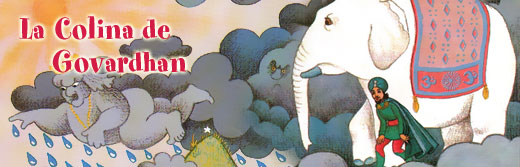
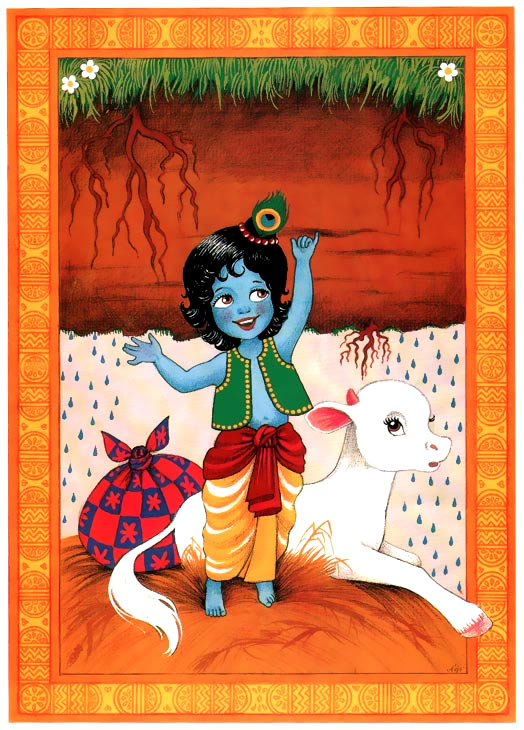

Pero no fue Dios en los cielos quien respondio las oraciones de Nanda Mahara y los Vrijvasis. Fue el pequeño Gopal quien sonriendo les dijo: “No teman mis Vrijvasis, yo los protejere. Y Me encargare de Indra.”
Nanda Maharaj se rio. “No seas pretensioso. Tu eres un pollito. No hay forma de que puedas detener esta tormenta. Nadie aparte del maestro de Indra, el Supremo Dios, nos podra salvar.”
Gopal sonrio a los comentarios de su padre. “Creeme, yo los puedo salvar por que yo soy el jefe de Indra. El Señor del Universo.” Levantando su brazito Gopal concluyo: “Nadie es mas poderoso que yo.”